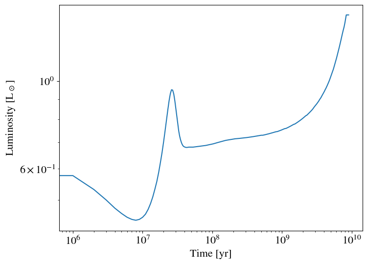

Introduction to Stellar
Table of contents
- Set up input and output file directories
- Options for output variables
- Adding XUV luminosity as an output parameter
If you have not installed the packages vplanet and vplanet_inference you first need to install these.
import os
import numpy as np
from astropy import units as u
import matplotlib.pyplot as plt
from matplotlib import rcParams
rcParams['font.family'] = 'stixgeneral'
rcParams['text.usetex'] = False
rcParams['xtick.labelsize'] = 16
rcParams['ytick.labelsize'] = 16
rcParams['axes.labelsize'] = 16
import vplanet_inference as vpi
Set up input and output file directories
vplanet_inference requires that we have a set of template infiles saved somewhere. We will call the directory containing the infiles the inpath.
It also requires that we specify an outpath directory where infiles will be copied from inpath and written with the substituted parameters that we specify.
# Specify the directory to read infile templates from
inpath = os.path.join(vpi.INFILE_DIR, "stellar/")
# Speficy the directory where infiles will be written to
outpath = "output/"
astropy units
vplanet_inference makes use of a package called astropy to specify and handle all unit conversions in its calculations.
You can check out the astropy docs for an in-depth explanation for how to use astropy.units, but some useful units we’ll use here are:
| Unit | Symbol | astropy variable |
|---|---|---|
| Solar mass | $M_\odot$ | u.Msun |
| Solar luminosity | $L_\odot$ | u.Lsun |
| Solar radius | $R_\odot$ | u.Rsun |
| year | yr | u.yr |
| no units | u.dimensionless_unscaled |
Units can manipulated and converted to other units, for example:
10 * u.m / u.s
$10 \; \mathrm{\frac{m}{s}}$
(1*u.Msun).to(u.kg)
$1.9884099 \times 10^{30} \; \mathrm{kg}$
(5 * u.km / u.hr).to(u.m / u.s)
$1.3888889 \; \mathrm{\frac{m}{s}}$
Specify model Input parameters
We can choose which variables in the infiles that we want to vary by creating a dictionary called inparams. The dict keys follow the convention <infile name>.<variable name> and the dict values specify the units for the variables using astropy.units.
# Dictionary of input parameters and units
inparams = {"star.dMass": u.Msun,
"vpl.dStopTime": u.Gyr}
Specify model Output parameters
Similarly we can also create a dictionary called outparams which tells vplanet_inference which variables to add to our saOutputOrder for each body. The dict keys follow the convention final.<body name>.<variable name>, and the dict values use astropy.units.
# Dictionary of output parameters and units
outparams = {"final.star.Radius": u.Rsun,
"final.star.Luminosity": u.Lsun}
Initialize the vplanet model
Once we’ve specified our input and output variables (inparams and outparams), and the directories where input and output files will be read/written (inpath and outpath), we can initialize a VplanetModel.
In addition, we can also specify the time_init (the initial time at which the simulation starts) and the timesteps (how frequently the outputs will be spaced). So if we set time_init=5e6*u.yr and timesteps=1e6*u.yr this will give us output times spaced like: [5e6, 6e6, 7e6, …, 8.999e9, 9e9]
Setting verbose = True will tell the model to print out progress info when we run the model.
vpm = vpi.VplanetModel(inparams=inparams,
outparams=outparams,
inpath=inpath,
outpath=outpath,
time_init=5e6*u.yr,
timesteps=1e6*u.yr,
verbose=True)
Example: evolution of the sun
As an example, we’ll compute the evolution of a sun-like star.
We’ll define a variable called theta, which will be our array of values that we substitute in for the inparameters. These values should be the same order and units that we specified in our inparams dictionary. For this example, we’ll set star.dMass to 1.0 solar masses, and vpl.dStopTime (the final age of the system) to 9.0 gigayears.
We can also optionally choose to save the written infiles to a specified outsubpath if we wish to inspect those later, such as for debugging. (If you run many simulations though, it is often better to say remove=True which deletes the infiles after the results are read. This will save you disk space.)
# Run the vplanet model
theta = np.array([1.0, 9.0])
evol = vpm.run_model(theta, remove=False, outsubpath="solar_evol")
Input:
-----------------
star.dMass : 1.0 [solMass] (user) ---> 1.988409870698051e+30 [kg] (vpl file)
vpl.dStopTime : 9.0 [Gyr] (user) ---> 2.840184e+17 [s] (vpl file)
Created file output//solar_evol/vpl.in
Created file output//solar_evol/star.in
Executed model output//solar_evol/vpl.in 9.074 s
Output:
-----------------
final.star.Luminosity : 1.46994644723093 [solLum]
final.star.Radius : 1.2128696277130946 [solRad]
The results of our evolution model are saved to a variable called evol. If you print the results, you’ll see that evol is a dictionary, where the keys are the variables we specified in our outparams dictionary, and the values of the dictionary are arrays containing value of each variable at each timestep with the units we specified.
evol
{'final.star.Luminosity': <VPLANETQuantity [0.64096578, 0.57682419, 0.53206505, ..., 1.46994645,
1.46994645, 1.46994645] solLum>,
'final.star.Radius': <VPLANETQuantity [1.43389392, 1.36010004, 1.3032261 , ..., 1.21286963,
1.21286963, 1.21286963] solRad>,
'Time': <VPLANETQuantity [0.00000000e+00, 1.00000000e+06, 2.00000000e+06, ...,
8.99800048e+09, 8.99899866e+09, 9.00000000e+09] yr>}
Plotting the evolution
We can plot the results showing the stars luminosity evolution vs. time:
plt.figure(figsize=[8,6])
plt.plot(evol["Time"], evol["final.star.Luminosity"])
plt.xlabel("Time [yr]")
plt.ylabel("Luminosity [L$_\odot$]")
plt.xscale("log")
plt.yscale("log")
plt.show()

Task: plot the evolution of the star’s radius
[your code goes here...]
Options for output variables
Take a look at the files that the model has created in outpath directory. Within the local directory of this notebook, you should see a list of files like:
output/
solar_evol/
star.in
system.log
system.star.forward
vpl.in
Now see what output parameters you can add to outparams. For a description of available output options for each vplanet model, see the documentation here. You can also open up the log file for one of the simulations we’ve run, which should show a list of variables like this. For example, the file infile_templates/solar_evol/system.log should contain a list that looks something like this:
-------- Log file system.log -------
Executable: /home/jbirky/.conda/envs/py39/bin/vplanet
Version: Unknown
System Name: system
Primary Input File: vpl.in
Body File #1: star.in
Allow files to be overwitten: Yes
Mass Units: Grams
Length Units: Meters
Time Units: Seconds
Angle Units: Radians
------- FORMATTING -----
Verbosity Level: 0
Crossover Decade for Scientific Notation: 4
Number of Digits After Decimal: 6
Integration Method: Runge-Kutta4
Direction: Forward
Time Step: 3.155760e+07
Stop Time: 2.840184e+17
Output Interval: 3.155760e+13
Use Variable Timestep: Yes
dEta: 0.010000
Minimum Value of ecc and obl: 1.000000e-10
---- INITIAL SYSTEM PROPERTIES ----
(Age) System Age [sec]: 1.577880e+14
(Time) Simulation Time [sec]: 0.000000
(TotAngMom) Total Angular Momentum [kg*m^2/sec]: 2.904811e+43
(TotEnergy) Total System Energy [kg*m^2/sec^2]: -1.576626e+41
(PotEnergy) Body's non-orbital Potential Energy [kg*m^2/sec^2]: -1.587188e+41
(KinEnergy) Body's non-orbital Kinetic Energy [kg*m^2/sec^2]: 1.056219e+39
(DeltaTime) Average Timestep Over Last Output Interval [sec]: 0.000000
----- BODY: star ----
Active Modules: STELLAR
Module Bit Sum: 65
Color: 000000
(Mass) Mass [kg]: 1.988410e+30
(Radius) Radius [m]: 9.975600e+08
(RadGyra) Radius of Gyration/Moment of Inertia Constant []: 0.449297
(RotAngMom) Rotational Angular Momentum [kg*m^2/sec]: 2.904811e+43
(RotVel) Rotational Velocity [m/sec]: 7.254461e+04
(BodyType) Type of Body (0 == planet) []: 0.000000
(RotRate) Rotational Frequency [/sec]: 7.272205e-05
(RotPer) Rotational Period [sec]: 8.640000e+04
(Density) Average Density [kg/m^3]: 478.189663
(HZLimitDryRunaway) Semi-major axis of Dry Runaway HZ Limit [m]: 1.084537e+11
(HZLimRecVenus) Recent Venus HZ Limit [m]: 9.447390e+10
(HZLimRunaway) Runaway Greenhouse HZ Limit [m]: 1.254258e+11
(HZLimMoistGreenhouse) Moist Greenhouse HZ Limit [m]: 1.250040e+11
(HZLimMaxGreenhouse) Maximum Greenhouse HZ Limit [m]: 2.269291e+11
(HZLimEarlyMars) Early Mars HZ Limit [m]: 2.475328e+11
(Instellation) Orbit-averaged INcident STELLar radiATION [kg*m^2/sec^2/(m^2*sec)]: -1.000000
(CriticalSemiMajorAxis) Holman & Wiegert (1999) P-type Critical Semi-major Axis [m]: -1.000000
(LXUVTot) Total XUV Luminosity [kg*m^2/sec^2/(m^2*sec)]: 2.453617e+23
(LostEnergy) Body's Total Lost Energy [kg*m^2/sec^2]: 5.562685e-309
(LostAngMom) Lost Angular Momentum due to Magnetic Braking [kg*m^2/sec]: 5.562685e-309
----- STELLAR PARAMETERS (star)------
(Luminosity) Luminosity [kg*m^2/sec^3]: 2.453617e+26
(LXUVStellar) Base X-ray/XUV Luminosity [kg*m^2/sec^3]: 2.453617e+23
(Temperature) Effective Temperature [K]: 4309.976981
(LXUVFrac) Fraction of luminosity in XUV []: 0.001000
(RossbyNumber) Rossby Number []: 0.028968
(DRotPerDtStellar) Time Rate of Change of Rotation Period in STELLAR []: -3.381378e-10
Output Order: Time[sec] Luminosity[kg*m^2/sec^3] Radius[m]
Grid Output Order:
---- FINAL SYSTEM PROPERTIES ----
(Age) System Age [sec]: 2.841762e+17
(Time) Simulation Time [sec]: 2.840184e+17
(TotAngMom) Total Angular Momentum [kg*m^2/sec]: 2.905763e+43
(TotEnergy) Total System Energy [kg*m^2/sec^2]: -1.576418e+41
(PotEnergy) Body's non-orbital Potential Energy [kg*m^2/sec^2]: -1.876426e+41
(KinEnergy) Body's non-orbital Kinetic Energy [kg*m^2/sec^2]: 9.262456e+34
(DeltaTime) Average Timestep Over Last Output Interval [sec]: 8.546382e+07
----- BODY: star ----
Active Modules: STELLAR
Module Bit Sum: 65
Color: 000000
(Mass) Mass [kg]: 1.988410e+30
(Radius) Radius [m]: 8.437934e+08
(RadGyra) Radius of Gyration/Moment of Inertia Constant []: 0.237427
(RotAngMom) Rotational Angular Momentum [kg*m^2/sec]: 1.215901e+41
(RotVel) Rotational Velocity [m/sec]: 1285.565269
(BodyType) Type of Body (0 == planet) []: 0.000000
(RotRate) Rotational Frequency [/sec]: 1.523555e-06
(RotPer) Rotational Period [sec]: 4.124030e+06
(Density) Average Density [kg/m^3]: 790.148950
(HZLimitDryRunaway) Semi-major axis of Dry Runaway HZ Limit [m]: 1.642395e+11
(HZLimRecVenus) Recent Venus HZ Limit [m]: 1.354015e+11
(HZLimRunaway) Runaway Greenhouse HZ Limit [m]: 1.768472e+11
(HZLimMoistGreenhouse) Moist Greenhouse HZ Limit [m]: 1.791572e+11
(HZLimMaxGreenhouse) Maximum Greenhouse HZ Limit [m]: 3.038232e+11
(HZLimEarlyMars) Early Mars HZ Limit [m]: 3.314952e+11
(Instellation) Orbit-averaged INcident STELLar radiATION [kg*m^2/sec^2/(m^2*sec)]: -1.000000
(CriticalSemiMajorAxis) Holman & Wiegert (1999) P-type Critical Semi-major Axis [m]: -1.000000
(LXUVTot) Total XUV Luminosity [kg*m^2/sec^2/(m^2*sec)]: 3.769280e+22
(LostEnergy) Body's Total Lost Energy [kg*m^2/sec^2]: 3.000065e+40
(LostAngMom) Lost Angular Momentum due to Magnetic Braking [kg*m^2/sec]: 2.893603e+43
----- STELLAR PARAMETERS (star)------
(Luminosity) Luminosity [kg*m^2/sec^3]: 5.626955e+26
(LXUVStellar) Base X-ray/XUV Luminosity [kg*m^2/sec^3]: 3.769280e+22
(Temperature) Effective Temperature [K]: 5767.189213
(LXUVFrac) Fraction of luminosity in XUV []: 6.698615e-05
(RossbyNumber) Rossby Number []: 3.685018
(DRotPerDtStellar) Time Rate of Change of Rotation Period in STELLAR []: 7.878728e-12
Output Order: Time[sec] Luminosity[kg*m^2/sec^3] Radius[m]
Grid Output Order:
Parameters listed in parenthesis can be added to the outparams dictionary.
Adding XUV luminosity as an output parameter
Say we also want to model the XUV luminosity of our star.
vplanet includes the Ribas+2005 empirical model for XUV evolution of low-mass, which is parameterized by a broken power law:
This model assumes that young (more active) stars exhibit a “saturated” level of XUV luminosity relative to bolometric (total luminosity), which then decays exponentially over time, after a “saturation time”. Here $L_{\rm bol}$ is the bolometric luminosity [$L_\odot$], $L_{\rm XUV}$ is the XUV luminosity [$L_\odot$], $f_\mathrm{sat} = \log_{10}(L_{\rm XUV}/L_{\rm bol})$ is the saturation ratio, $t_\mathrm{sat}$ is the duration of saturation phase [Gyr], $\beta_\mathrm{XUV}$ is the exponential decay rate of $L_{\rm XUV}$ after saturation, and $t$ is the evolution time [Gyr].
To have vplanet compute the XUV lumiosity evolution using this model, we’ll add the following input variables to our body infiles (since they are properties of the star, they will go in star.in):
dSatXUVFrac
dSatXUVTime
dXUVBeta
And we will also add the following variable to our output variables in saOutputOrder:
LXUVTot
inparams = {"star.dMass": u.Msun,
"star.dSatXUVFrac": u.dex(u.dimensionless_unscaled),
"star.dSatXUVTime": u.Gyr,
"vpl.dStopTime": u.Gyr,
"star.dXUVBeta": -u.dimensionless_unscaled}
outparams = {"final.star.Radius": u.Rsun,
"final.star.Luminosity": u.Lsun,
"final.star.LXUVStellar": u.Lsun}
vpm = vpi.VplanetModel(inparams=inparams,
outparams=outparams,
inpath=inpath,
outpath=outpath,
time_init=5e6*u.yr,
timesteps=1e6*u.yr,
verbose=True)
Example: evolution of Trappist-1
Make modifications to the template above by subsituting different input parameter values, then execute and plot your results. Try using the parameters from Birky et al. 2021 for the Trappist-1 exoplanet hosting system.
[your code goes here...]
Habitable zone limits
How does the “habitable zone” vary for Trappist-1? See what this looks like for different planetary conditions from Kopparapu+2013 by adding these variables to your outparams dictionary and re-running the model:
HZLimitDryRunaway
HZLimRecVenus
HZLimRunaway
HZLimMoistGreenhouse
HZLimMaxGreenhouse
HZLimEarlyMars
[your code goes here...]